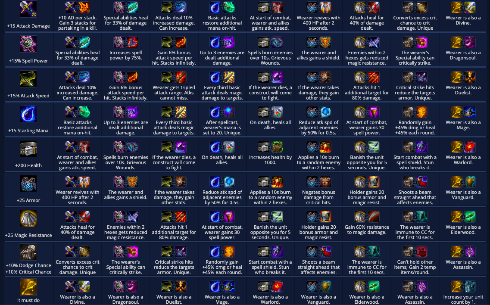
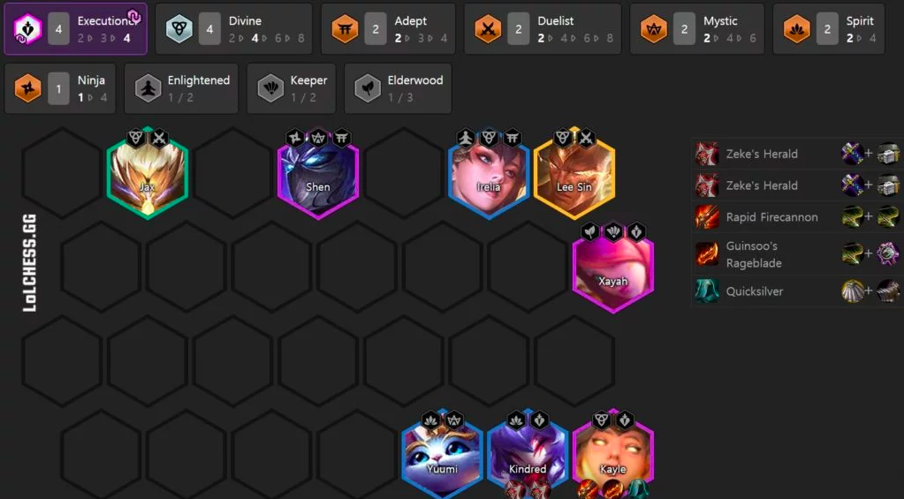

Tier List Tiers: S = Superb/best, A = Amazing/High, B = Average/Good, C = Okay/Not Optimal
S: Slayers, Kayle, Keepers, 7 Mages
A: 8 Brawler Shyvana, Fabled Vanguard Mystic, Enlightened Talon, Duelists
B: Dragonsoul, Spirit Sharpshooters, Sharpshooters, Cultists, Warlords, Mage Elderwood, Assassins
C: Zed, Reroll Diana, Reroll Nasus
S Tier: Best TFT Comps - Highly Flexible or Very Strong
Chosen: Slayer
How to Play: Standard leveling (check economy guide), play a strong early game board and transition your board when you reach level 8, either on 4-5 or 5-1.
Counters: Burst damage and anti heal.
A Tier: Solid TFT Team Comps. Weaker, less flexible, requires more luck than S-Tier
Chosen: Brawler
How to Play: Play when you get a chosen brawler in the early game. Active 3 dragonsoul or 3 elderwood when you do not have more brawlers to play, however, always try to play 4 brawlers at stage 2 and 6 brawlers at stage 3. You will want to find 8 brawlers most likely around level 8 at 5-1 or 5-2. Look to 3 star Shyvana, since she is your main carry.
Counters: Giantslayer item.
B Tier: Playable, but not Preferred. These comps could be strong if uncontested.
Chosen: Warlord
How to Play: Play when you get a chosen warlord in the early game, preferably chosen Walord Vi or chosen Warlord Jarvan IV. Make sure to give Katarina all 3 of her items, she is the main carry. Play aggresively at stage 3, look to play 6 warlord + 2 assassin with Pyke at level 6. Go to level 7 at 3-5 or 4-1, play a vanguard. Stay at level 7 and try to 3 star Katarina, as well as Vi and Jarvan IV. Vi and Jarvan IV can both secondary carry, so make sure to give them items as well. After 3 starring both of them, level to 8, and then level 9. If possible put in 9 warlords (warlord spatula needed, check items), give the warlord spatula to samira, if comes super late game, she is the perfect carry.
Counters: After 6 warlords, with no 3 stars, the composition starts to fall off compared to other compositions
C Tier and Below: These are compositions that are weak, but if they are given to you, you might be forced to play them.

Chosen: Nasus (Divine or Syphoner)
How to Play: Only play when you get a chosen Nasus in the early game, with more nasus. This is a "slowroll" comp meaning you stay a low levels in order to 3 star Nasus as fast as possible, by staying above 50 gold (makes 5 interest) and only rolling access gold. Look to 3 star Nasus somewhere around 3-5. After 3 starring Nasus, make sure he has at least 1 offensive and 1 defensive item, so he can win you rounds. Look to reach level 8 and play 4 syphoners with Morgana and Swain (and Vladimir if you have divine chosen). Play random enlightened/divine units to synergize with Morgana and Nasus until the end of the game.
Counters: Anti Heal (Morello/Sunfire items)
Items are a vital part of Teamfight Tactics. Items are made when two basic item components are placed onto a champion. The two basic item components then combine to make one item component, containing both properties from the basic items, as well as an added bonus, making each item unique, and useful in its own scenario. Here is the list of each item in the game. (Each row has a basic component, each column represents another item, when the item in the row and column combine, they make the item shown, e.x. in the top left, a BF Sword is combined with another BF Sword, making a Deathblade)

Next, there's the Economy Management. To understand Economy in TFT, it is important to understand how gold is given. Every round, (with the exception of rounds 1-2, 1-3, and 1-4) players are given 5 gold to spend. However, there two other ways the player can receive even more gold, these ways are through interest, or through a win/loss streak.
Interest - When the player has an increment of 10 gold, the player will receive an extra gold for every 10 increment they have (10-19 gold = +1 extra gold, 30-39 gold = +3 extra gold, to a max of +5 gold at 50+)
Win streaks and loss streaks - When the player is on a "2-3 win/loss streak" meaning they have won/loss 2-3 rounds in a row, they will be given +1 extra gold. On a 4 win/loss streak they will be given +2 gold, and finally on a 5+ win/loss streak they will be given +3 gold.
With this basic knowledge, Generally, the player should aim to win/loss streak stage 2 in order to reach the interest margins as fast as possible. If this is done successfully the player should aim to reach 10 gold by 2-5, 30 gold by 2-7, and 50 gold at 3-2, and try to maintain 50 gold for the rest of the game to continue earning 5 interest gold every round. (However, economy in TFT also has many other rare scnarios and exceptions that can be observed and learned as players watch/play more TFT)
Here is an illustration of "Standard leveling"

Scouting is an important concept in TFT which refers to looking at others players boards, and then playing your own game accordingly. Scouting can be used for two main purposes:
The first purpose is to find out what other players are playing. By scouting in stage 2, 3, or 4, the player can understand what other player are playing by their units, chosen unit, or items. If a player has a chosen brawler with a bunch of other brawler units, they are likely going to play the "Brawler Shyvana" composition. If a player has a "Guardian Angel item (BF Sword + Chain Vest)" they could be playing the "Slayers" Composition. This is important to see how many people are contesting your composition (if other players use a certain unit, you are less likely to see that unit), or the player could try to look for a counter to what most people are playing. Overall the intel scouting gives you is extremely beneficial as the game moves into the mid/late game.
The second purpose is to see how their board is positioned, and position your board accordingly to have the highest chances of winning/losing. This is most applicable in the late game, since if a very powerful unit on the enemy's side is positioned to immediately attack your carry, you want to move your carry out of the way, so your team has a fighting chance. Maybe you are playing an Assassin composition, which contain a team of glass cannons. It is important to position these Assassins so that they attack the enemy carry as fast as possible, so the after killing the carry, the rest of the team will fall.

For example, when playing Assassins into Kayle, you must scout to see where the Kayle is on the enemy team. Kayle is the only carry in that Composition, making is so that if Kayle is dead, the rest of the team will be defenceless. By using scouting, the assassin player can move their assassins to the right, in order to swarm the Kayle to kill her before Kayle destroys their assassins.
Health Management is arguably the most important part of Teamfight Tactics. This is because, when the players health reaches 0, they are knocked out of the game. As a result, it is typically a good idea to play your strongest board in order to increase the chances of winning each round. However, there are two dominant ways to manage health:

(This is a typical "carousel" in TFT. A carousel is one way players obtain items every game. Carousels start with the two players with the lowest health are released and can walk into whichever champion with an item they want. Then the next two lowest, then the next, and then the last two players)
The first way to manage health is to play strongest board. Strongest board refers to playing the strongest synergies in the players "natural shops" (the shops given without rerolling). This health management technique is effective when the player wants to transition to a late game composition such as Slayers, Kayle, or Mages. These compositions usually want to reach level 8 with good economy and health, in order to successfully transition and play from there.
The second way to manage health is to intentionally lose health. This is not recommended for beginners/intermediate players since it requires a very good understanding of the game to play. The advantages to this health management technique is that they are given "Carousel Priority" (first/second pick during a carousel). Carousel Priority can be extremely helpful to compositions that need very specific items to work, losing the early game to obtain these items on carousels to win later on is an advanced, and strong tactic as well.